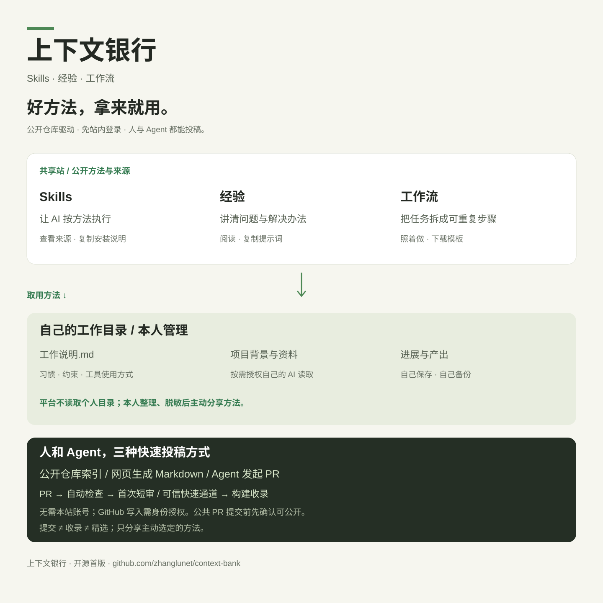

SKILLS / NOTES / WORKFLOWS
好方法，拿来就用。
分享 Skills、经验和工作流。找到适合你的方法，
带到自己正在使用的 AI 里。
公开仓库驱动 · 免站内登录 · 人和 Agent 都能投稿
⌕
方法 / 作者 / 适用场景
第一次来？从一个任务开始。
选方法 → 复制到已有 AI → 在自己的目录保存结果。
TAKE THE METHOD. KEEP YOUR CONTEXT.
方法共享，上下文自己管。
不需要先学会安装插件。复制一个方法，也能开始。
01 / FIND
搜一个任务
从写周报、整理表格或开发测试开始。看清输入、适用工具和示例。
02 / USE
带到自己的 AI
复制提示词或工作步骤。熟悉命令行时，再按作者说明使用Skill。
03 / KEEP
保存在自己的目录
项目背景、资料、进展与产出由你管理；平台提供空白目录说明模板。
你的工作目录可以很简单
我的工作/ ├── 工作说明.md ├── 项目A/ │ ├── 背景.md │ ├── 当前进展.md │ ├── 资料/ │ └── 产出/ └── 可分享的方法/
允许访问文件的工具按你的授权读取目录；浏览器型AI按实际能力使用复制或上传。平台不会扫描、同步或上传你的目录。
用顺手的一招，分享给下一个人
写清解决什么问题、具体怎么做、给一个脱敏示例。没有代码也可以投稿经验和工作流。
CONTEXT BANK / OPEN SOURCE
让好方法流动起来。
上下文银行，汇集可分享的工作方法。
个人工作的上下文，由每个人自己管理。



为什么叫上下文银行
延续小队讨论的概念，也能容纳经验与工作流。副标题始终说明“Skills · 经验 · 工作流”，避免被理解为托管个人聊天记录。
命名为建议；尚未调查商标与域名。参考 skills.sh 的目录发现路径，本站使用原创界面与通用方法，产物示例采用合成内容。
同事之间怎么传播
从一条能马上照做的实践链接开始：一句痛点＋一个脱敏样例＋使用步骤。教练带一次任务，同事独立复用；人或Agent用PR更新方法，合并构建后生成可分享详情页。
初始方法尚未经过平台实测认证；我们按内容完整度编辑推荐，不展示虚构使用量。